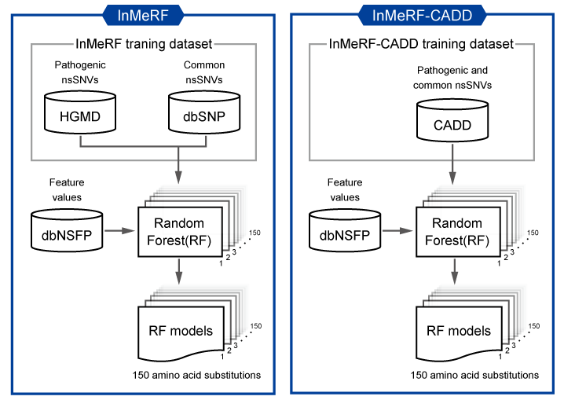

InMeRF is a tool to predict the pathogenicity of nonsynonymous SNVs (nsSNVs) using 150 discriminant models independently generated for all possible amino acid (AA) substitutions.
Publication
Please cite: Jun-ichi Takeda, Kentaro Nanatsue, Ryosuke Yamagishi, Mikako Ito, Nobuhiko Haga, Hiromi Hirata, Tomoo Ogi, and Kinji Ohno. “InMeRF: Prediction of pathogenicity of missense variants by individual modeling for each amino acid substitution” NAR Genom Bioinform. 2020 May 26;2(2):lqaa038. (PMID: 33543123).
Materials and Methods
-
A total of 72,556 pathogenic nsSNVs were extracted from the Human Gene Mutation Database (HGMD) Pro 2015.2 [CLASS = DM (disease-causing mutation)] included in dbNSFP v4.0a.
-
A total of 166,161 common nsSNV candidates were extracted from dbNSFP v4.0a based on dbSNP build 151 with at least one minor allelic frequency (MAF) of 1000Gp3_AF, UK10K_AF, ExAC_AF, gnomAD_exomes_AF and gnomAD_genomes_AF is > 0.001. We then filtered 162,918 common nsSNVs by removing nsSNVs included in HGMD and in dbNSFP v4.0a with “clinvar_clnsig = Pathogenic or Likely_pathogenic”.
-
Each nsSNV was classified into one of 150 different nonsynonymous AA substitutions. The pathogenic nsSNVs were sorted in ascending order of MAF, and the common nsSNVs were sorted in descending order of MAF. The same numbers of pathogenic and common nsSNVs were extracted for each AA substitution for random forest (RF) modeling.
-
Among 37 tools in dbNSFP v4.0a, nsSNV coverages of 3 tools were very low in either pathogenic or common nsSNVs. Therefore, rank scores of the remaining 34 tools in dbNSFP v4.0a were used as feature values (Table 1). To make RF models, nsSNVs that lacked one or more of 34 rank scores in dbNSFP v4.0a were excluded. Then, pathogenic and common nsSNVs were discriminated by using a machine learning library, scikit-learn, on Python version 3.7. Finally, a total of 150 RF models were generated (Figure 1).
Table 1. 37 tools in dbNSFP v4.0a and their nsSNV coverages in all, pathogenic and common nsSNVs.
| Tool |
Type |
Rate in all nsSNVs
(77,195,651) |
Rate in pathogenic nsSNVs
(72,556) |
Rate in common nsSNVs
(162,918) |
Feature values used for RF models |
| SIFT |
prediction |
92.65 |
97.31 |
89.62 |
O |
| SIFT4G |
95.63 |
98.12 |
93.46 |
O |
| Polyphen2_HDIV |
87.13 |
92.14 |
80.88 |
O |
| Polyphen2_HVAR |
87.13 |
92.14 |
80.88 |
O |
| LRT |
82.39 |
93.93 |
72.45 |
O |
| MutationTaster |
96.89 |
99.94 |
95.72 |
O |
| MutationAssessor |
82.45 |
89.32 |
76.07 |
O |
| FATHMM |
88.83 |
98.27 |
87.35 |
O |
| PROVEAN |
93.15 |
98.29 |
90.39 |
O |
| VEST4 |
97.31 |
99.35 |
95.72 |
O |
| MetaSVM |
95.82 |
99.40 |
94.08 |
O |
| MetaLR |
95.82 |
99.40 |
94.08 |
O |
| M-CAP |
95.90 |
97.39 |
37.24 |
X |
| REVEL |
95.82 |
99.40 |
94.08 |
O |
| MutPred |
90.22 |
81.09 |
6.21 |
X |
| MVP |
97.80 |
99.12 |
73.85 |
O |
| MPC |
83.00 |
91.76 |
75.79 |
O |
| PrimateAI |
89.88 |
96.72 |
85.13 |
O |
| DEOGEN2 |
91.13 |
94.52 |
86.73 |
O |
| CADD |
99.97 |
100.00 |
100.00 |
O |
| DANN |
99.41 |
100.00 |
100.00 |
O |
| fathmm-MKL |
99.41 |
100.00 |
100.00 |
O |
| fathmm-XF |
92.62 |
86.76 |
92.20 |
O |
| Eigen |
92.49 |
87.62 |
92.02 |
O |
| Eigen-PC |
92.49 |
87.62 |
92.02 |
O |
| GenoCanyon |
99.41 |
100.00 |
100.00 |
O |
| integrated_fitCons |
95.45 |
87.68 |
97.44 |
O |
| LINSIGHT |
2.04 |
0.07 |
3.52 |
X |
| GERP++ |
conservation |
98.95 |
99.98 |
98.51 |
O |
| phyloP100way_vertebrate |
99.99 |
100.00 |
99.97 |
O |
| phyloP30way_mammalian |
99.96 |
100.00 |
99.94 |
O |
| phyloP17way_primate |
99.92 |
100.00 |
99.90 |
O |
| phastCons100way_vertebrate |
99.99 |
100.00 |
99.97 |
O |
| phastCons30way_mammalian |
99.96 |
100.00 |
99.94 |
O |
| phastCons17way_primate |
99.92 |
100.00 |
99.90 |
O |
| SiPhy |
97.98 |
99.88 |
97.09 |
O |
| bStatistic |
98.24 |
98.93 |
98.02 |
O |

Figure 1. Overview of strategies for InMeRF and InMeRF-CADD. In InMeRF-CADD, pathogenic and common nsSNVs in CADD instead of HGMD and dbSNP were used to compare with other tools under the same conditions.